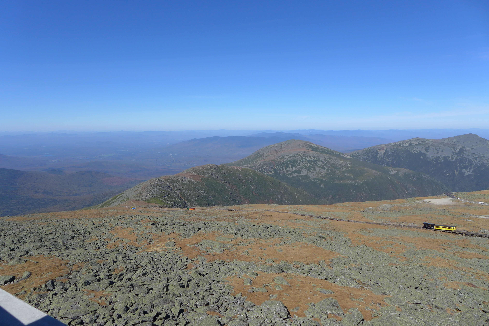

New Hampshire has 161 miles of trail, mainly in the White Mountains and fatures an above tree-line run through the Presidential Range and the summit of Mt. Washington
My wife and I visited New Hampshire on our honeymoon in 2017. We drove to the top of Mt. Washington and did a day-hike on the popular Franconia Ridge loop
Here are some pictures from our trip:
